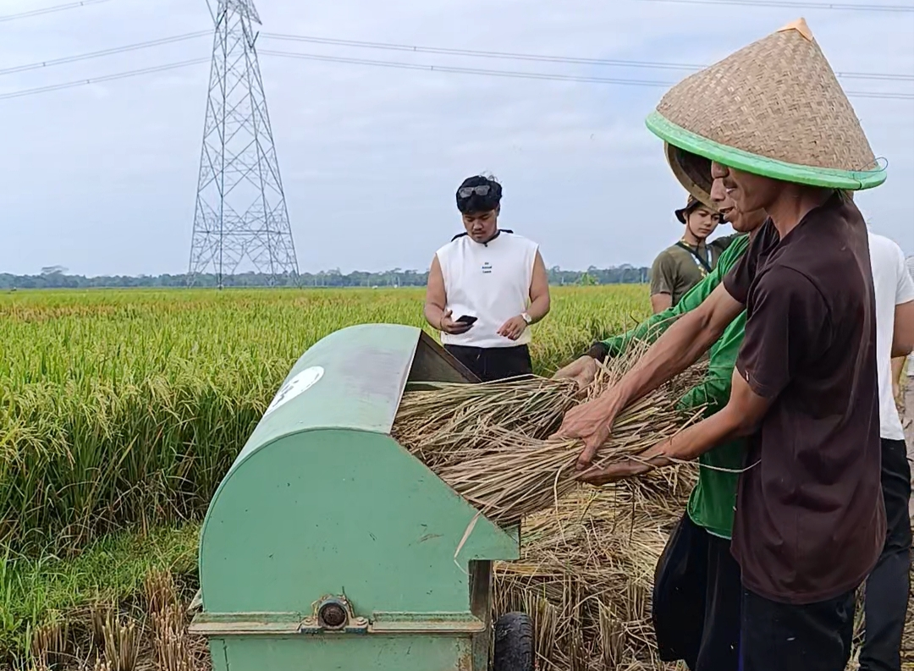
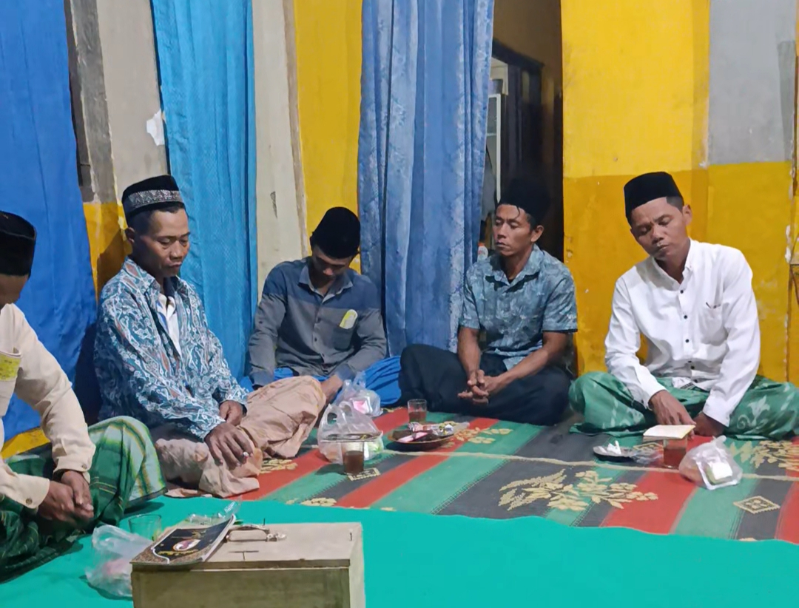
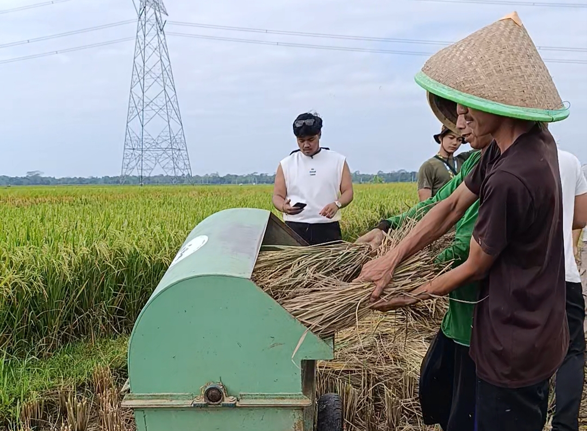
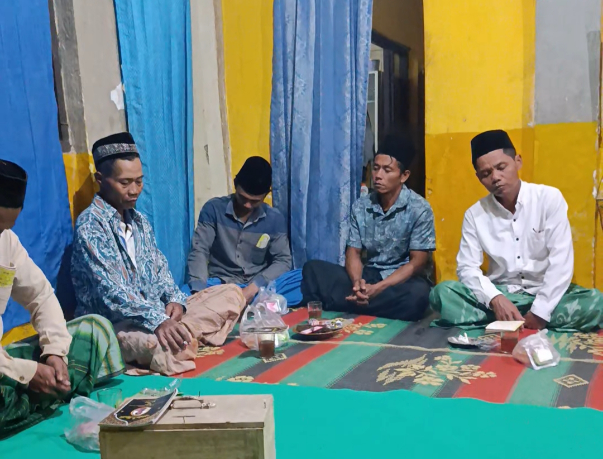

Tentang Desa Kami
Desa Gondanglegi merupakan sebuah desa yang berada di wilayah pesisir selatan Kabupaten Kebumen, terletak di Kecamatan Ambal, Kabupaten Kebumen, Jawa Tengah. Desa Gondanglegi memiliki tiga dusun yaitu Dusun Pendul, Dusun Krajan, dan Dusun Sanggup. Sebagian besar masayarakat Gondanglegi mayoritas berfokus ke tiga sektor utama yaitu Pertanian, Peternakan, dan UMKM Emping. Namun, di balik potensinya yang besar, Desa Gondanglegi juga dihadapkan pada sebuah tantangan alam yang signifikan. Sebagai wilayah yang sangat bergantung pada sektor pertanian, ancaman kekeringan menjadi risiko serius, terutama saat musim kemarau panjang. Keterbatasan sumber air pada musim tersebut dapat secara langsung mengganggu produktivitas lahan pertanian yang menjadi tumpuan utama kehidupan warga.
Potensi Unggulan Desa

Pertanian
Lahan sawah yang luas menjadi potensi utama, menghasilkan padi berkualitas tinggi setiap musim panen.

Peternakan
Peternakan salah satu sumber pencaharian masyarakat Gondanglegi, terutama peternakan sapi dan kambing.

UMKM Emping
Masyarakat aktif dalam usaha kecil dan menengah, seperti memproduksi makanan olahan khas Desa Gondangle yaitu Emping Melinjo.
Galeri Desa Gondanglegi
 



Video Profil Desa
Peta Wilayah Desa
Lihat Peta Desa Gondanglegi.